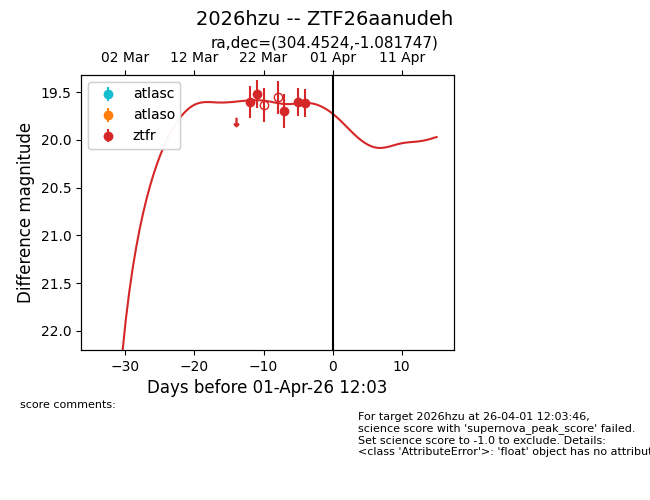
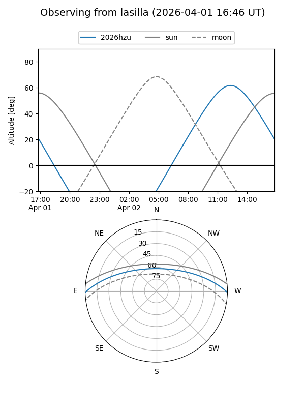
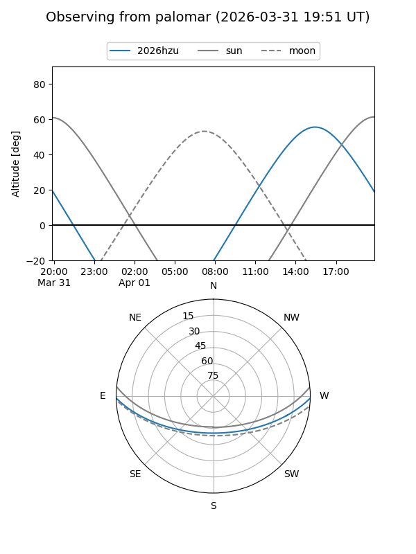
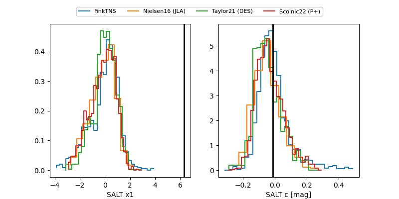

2026hzu
Target 2026hzu at 2026-04-01 12:07
Aliases and brokers:
FINK: link
Lasair: link
ALeRCE: link
TNS: link
YSE: link
alt names
ZTF26aanudeh (ztf,fink_ztf)
2026hzu (tns,yse)
Coordinates:
equatorial (ra, dec) = 304.4524,-1.08175
equatorial (HMS+DMS) = 20:17:48.59,-01:04:54.29
galactic (l, b) = (42.1562,-19.63792)
Flags:
Photometry:
last ztfr=19.62
5 ztfr detections
Lightcurve

Visibility


Additional plots
